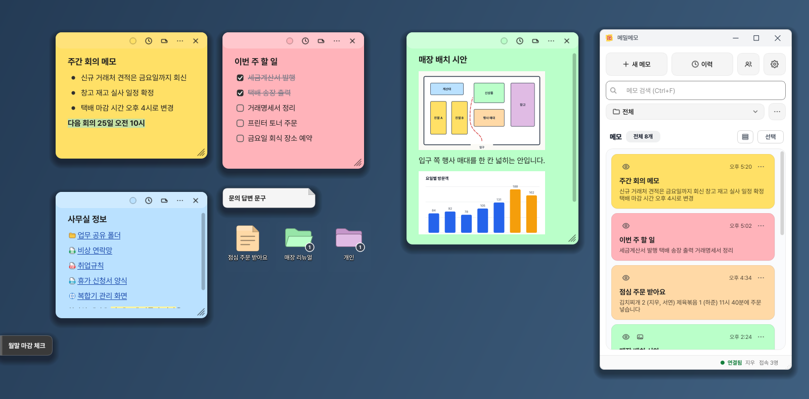
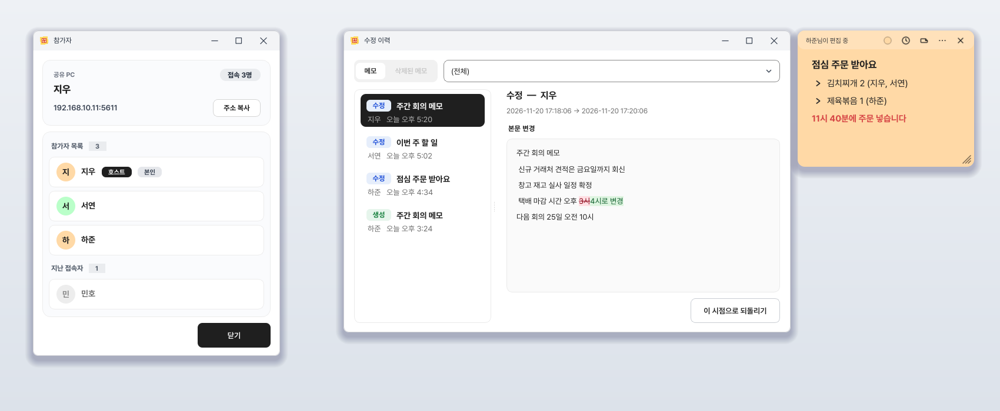
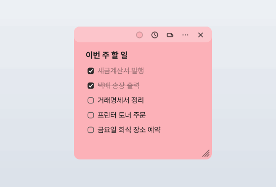
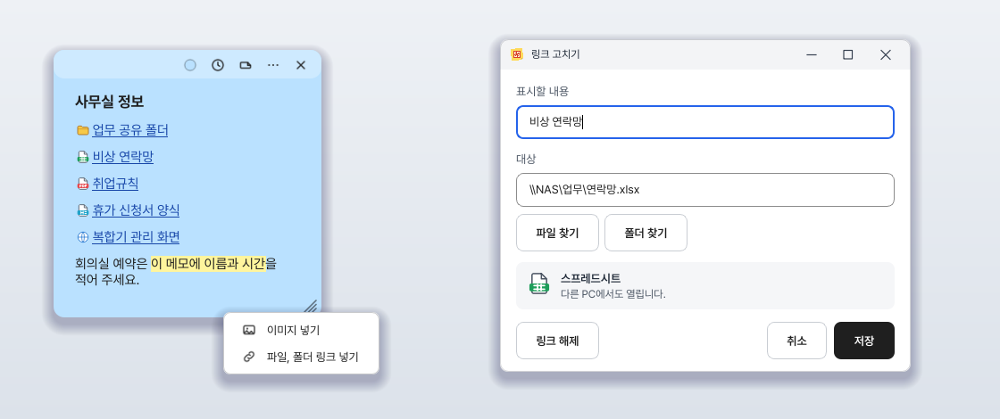
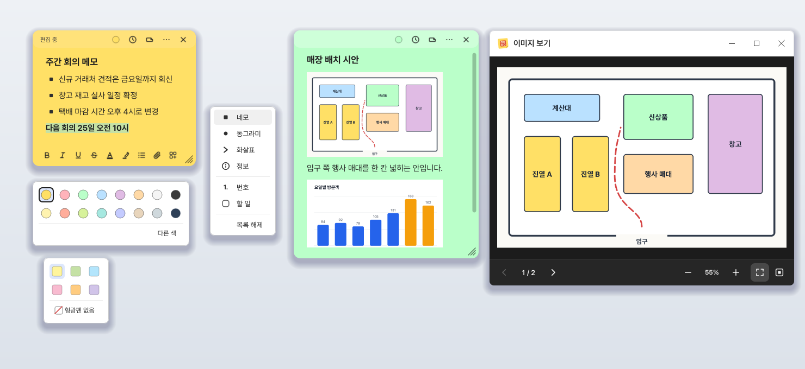

메모 이력 실시간 확인 및 복원
편집 중인 사용자를 표시하고, 수정 이력에서 원하는 시점으로 복원합니다.

Windows가 "PC 보호" 창을 띄우면 추가 정보 → 실행을 누릅니다.
편집 중인 사용자를 표시하고, 수정 이력에서 원하는 시점으로 복원합니다.

쪽지나 아이콘으로 접고, 화면 끝으로 끌어 탭으로 고정합니다. 펴면 원래 자리로 돌아옵니다.

공유 폴더의 파일과 폴더를 링크로 넣고, 종류별 아이콘으로 구분합니다.

체크박스, 글머리 기호, 글자 색, 형광펜, 이미지를 지원합니다.

메모 동기화에는 필요하지 않습니다. 새 버전 확인과 내려받기에만 사용합니다.
공유를 시작한 PC에 저장하고, 참여한 PC에도 받은 메모의 사본을 둡니다. 외부 서버로 보내지 않습니다.
다른 PC에서는 사본을 읽기 전용으로 봅니다. 공유 PC를 다시 켜면 자동으로 다시 연결합니다. 공유 PC를 다시 쓸 수 없으면 다른 PC가 사본으로 공유를 이어받습니다.
공유를 시작하는 PC에서 Windows 방화벽이 접근 허용을 묻습니다. 개인 네트워크를 허용합니다.
무료입니다. 광고와 유료 기능이 없습니다.
Windows 10, 11에서 동작합니다.